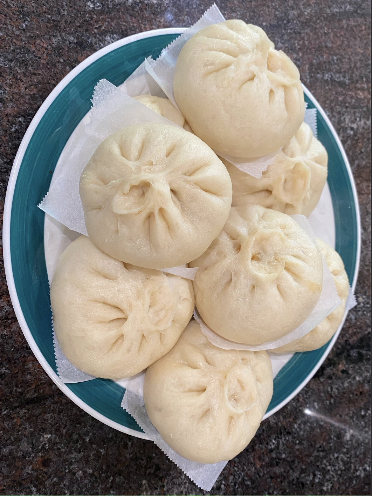
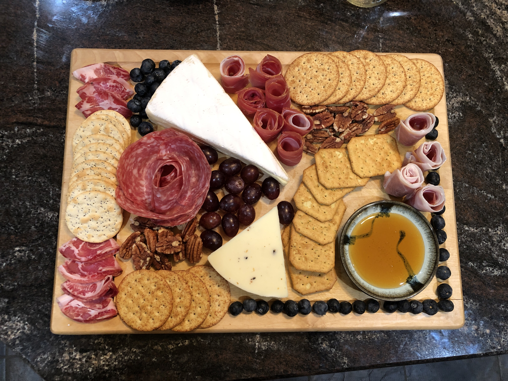
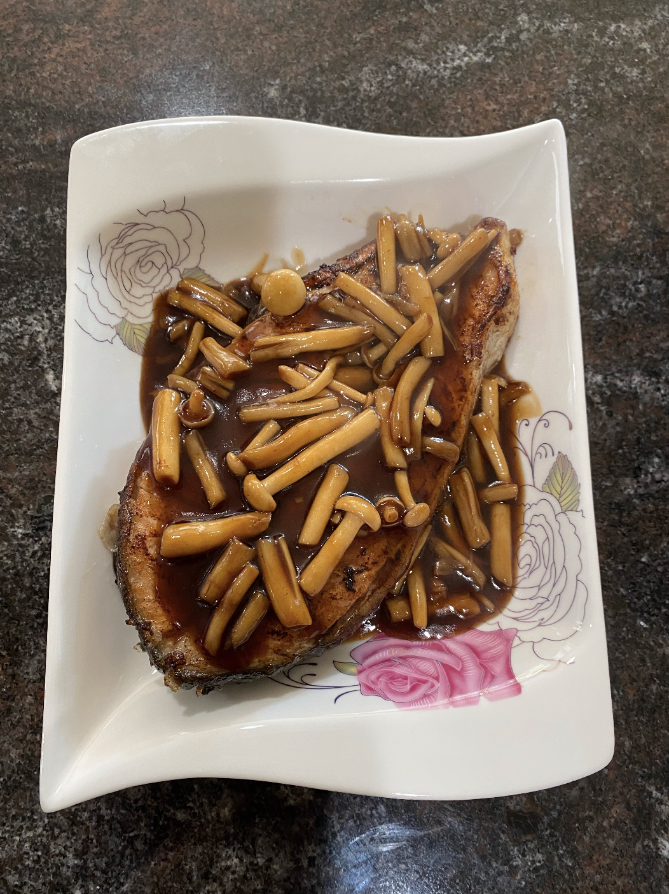
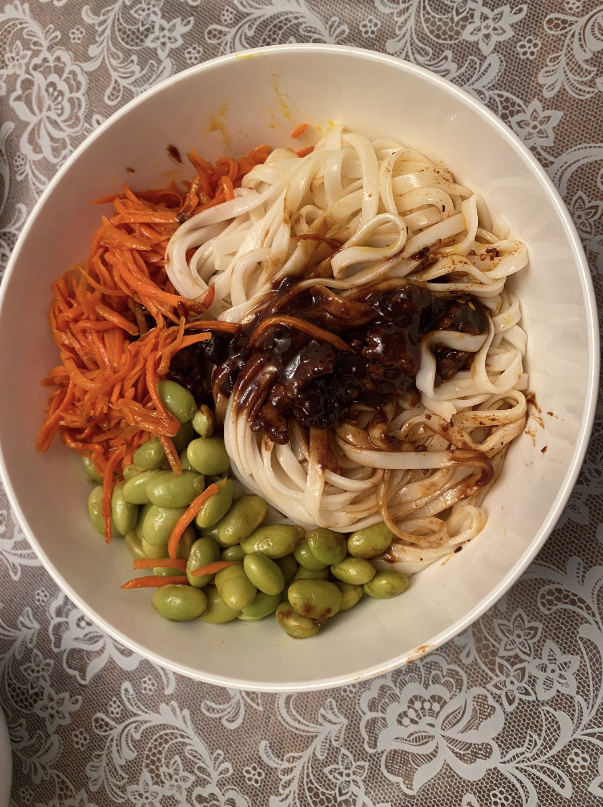
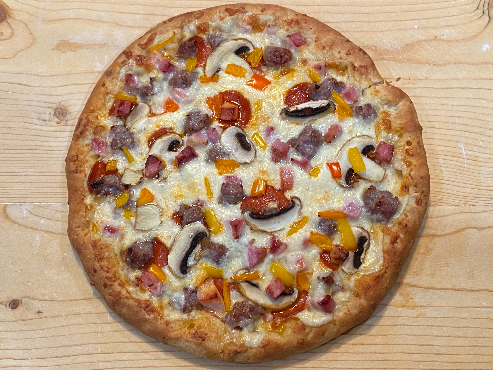
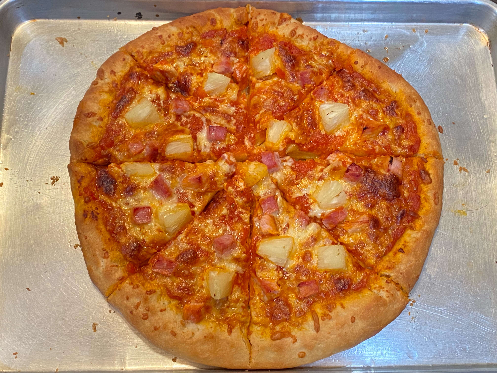
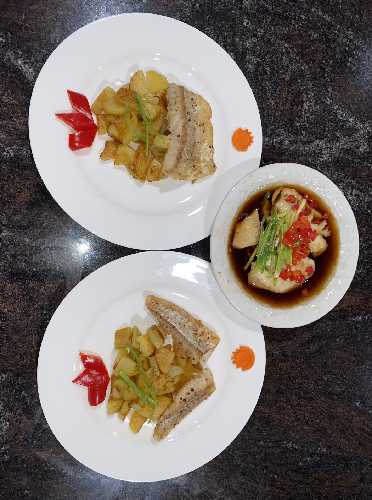
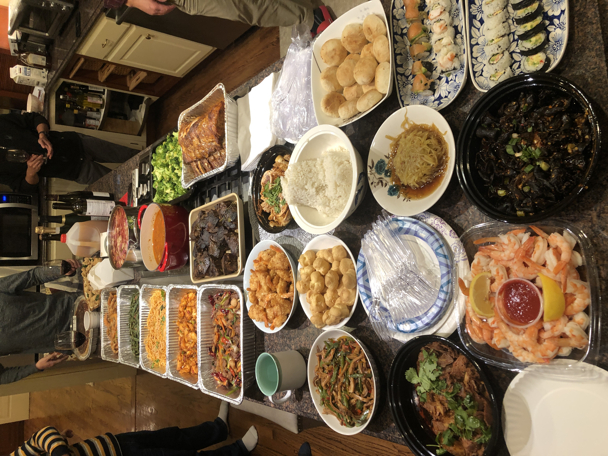
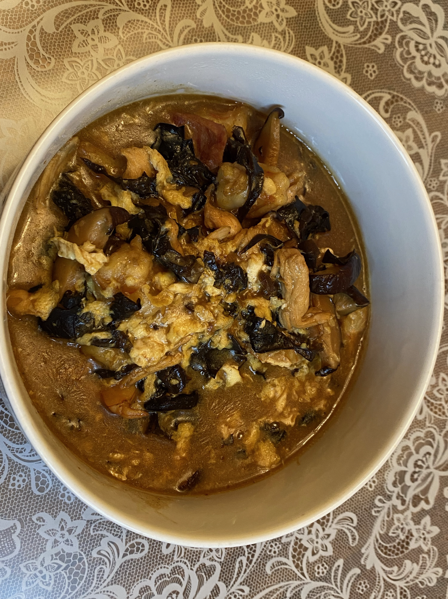
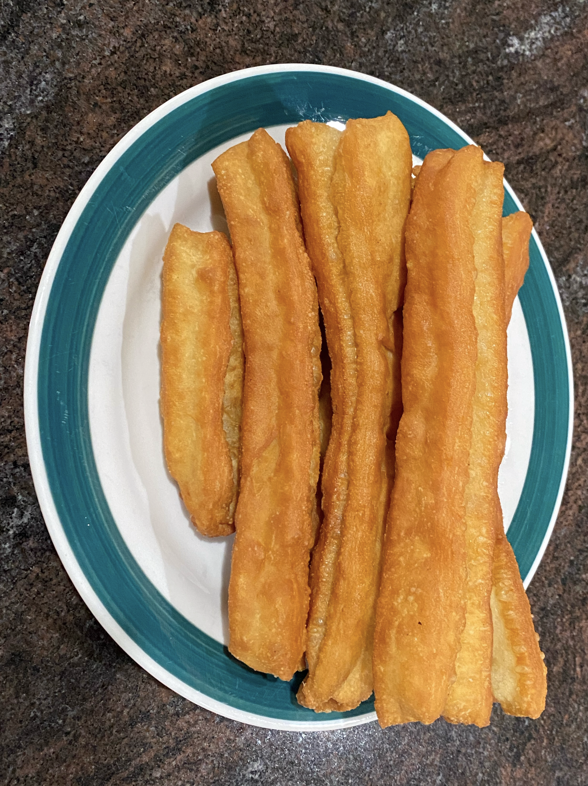

Many times, what makes a dish taste great is not only the objective taste itself, but also the memories associated with it. A familiar taste from childhood or one associated with another great memory can subconsciously make it much more tasty than it would to someone without those associations. That's why I also thought it'd be fun to document dishes that I have vivid memories of, on top of the deliciious everyday dishes I included as Mom's Recipes. Some of those dishes are included below.
Dumplings are a traditional Chinese staple! Some of my favorite memories in the kitchen are with all four members of my family each working on a different aspect of the dumpling making process. My dad makes the filling, my mom and I mold the flour and create the dumpling, and my brother boils the dumplings.


Noodles are eaten on birthdays to usher in continued longevity. Birthday noodles are often called "chang shou mian" or longevity noodles, and are made with one long noodle that has no breaks as symbolizing a long life.
 My family primarily eats Chinese cuisine, but we also like venturing out into other cuisines. Here are the results from a pizza night we had. It was absolutely delicious! Unfortunately my entire family is lactose intolerant. I don't know why we chose pizza.



